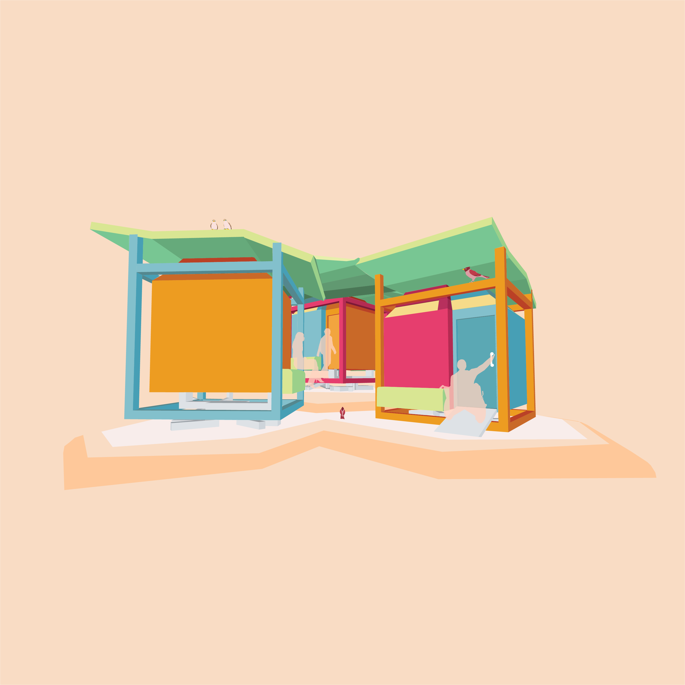

Tori Toilets
Materials：Rhinoceros Illustrator

- 


Chicago is one of the most dangerous cities for migrating birds. About 600 million birds die from building collisions each year in the U.S.
At the beginning of October, I saw a dead sparrow under a streetlamp near the Sullivan Building. It probably hit a window of the building and fell to the ground and died.
In downtown Chicago, I see a lot of birds walking and flying around. At the same time, I also see birds dying on the streets. Unfortunately, many people walk away from the dead birds without paying attention to them. It’s understandable because they don’t want to touch it. BUT, I didn't feel alive when I heard that the dead pigeons are not buried but disposed of as trash. Actually not only birds but also other non-human animals. This is also understandable because it costs extra money if we bury these dead animals.
I thought that if there was a place in the city where humans and birds could recognize each other and coexist, my feelings would become more positive. SO, I created a public bathroom for birds and humans.